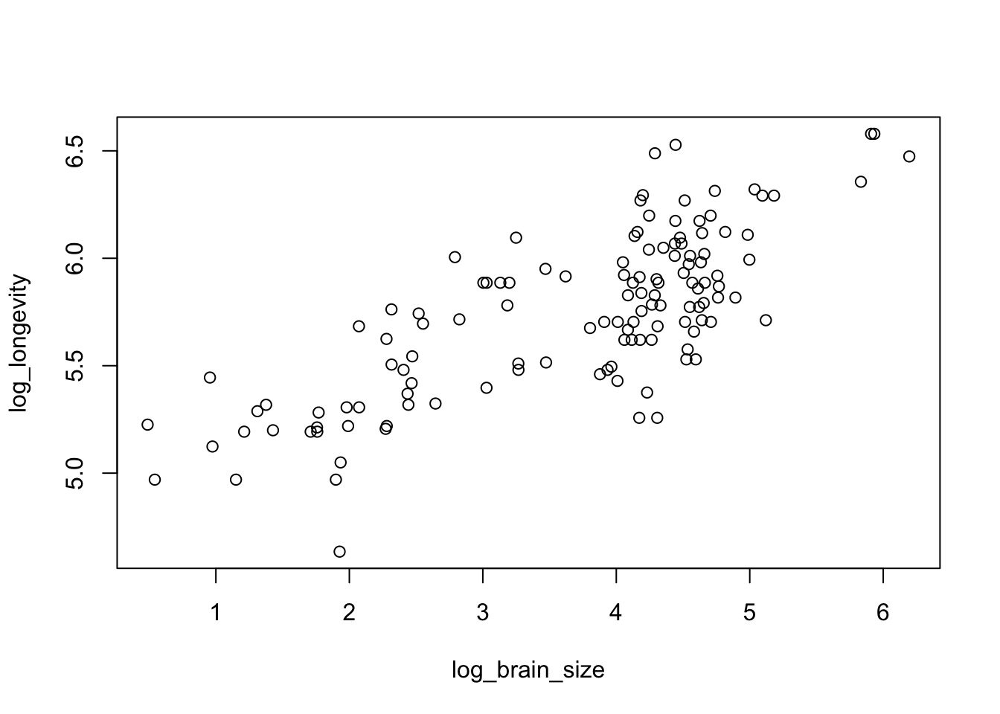
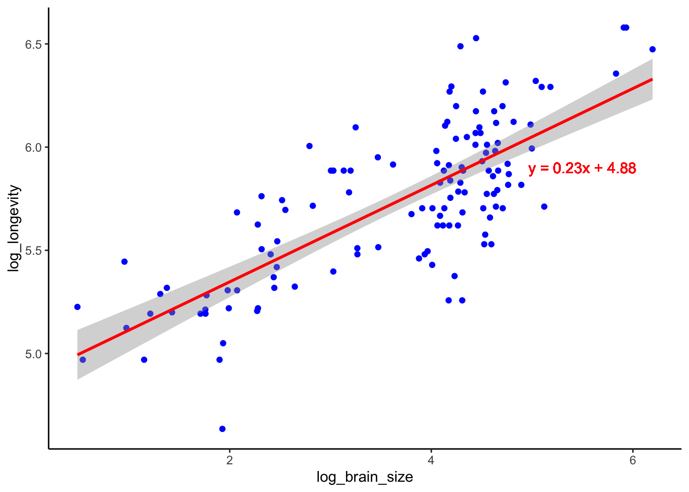
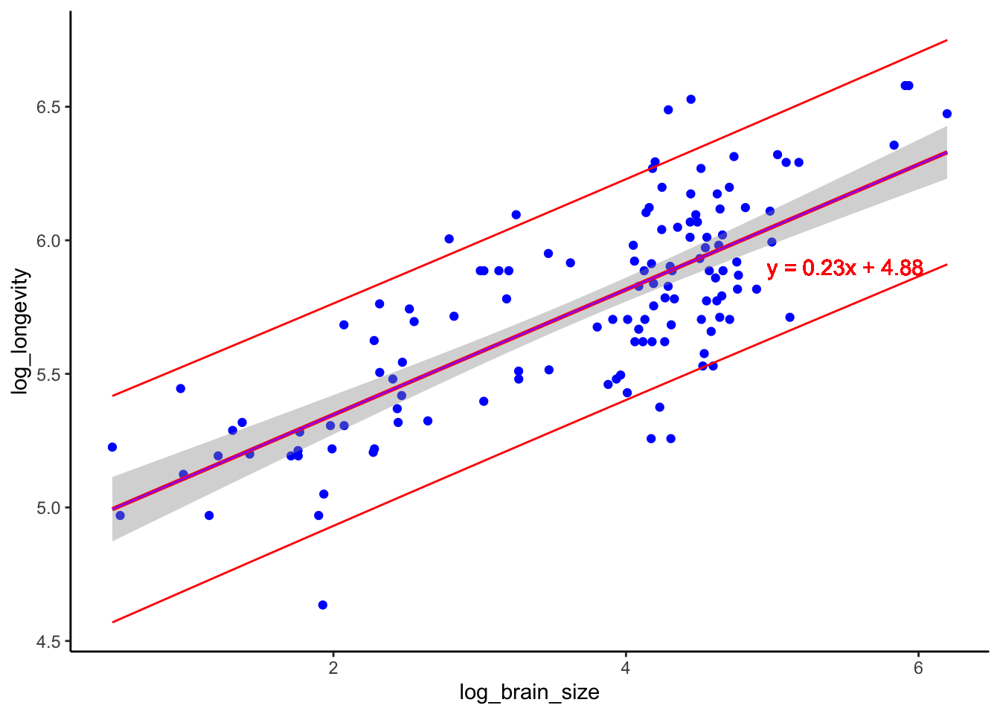

Z.prop.test <- function(p1, n1, p2 = NULL, n2 = NULL, p0,
alternative = "two.sided", conf.level = 0.95) {
# Check if the normal approximation rule is met
if (n1 * p1 < 5 | n1 * (1 - p1) < 5) {
warning("Warning: Normal approximation may not be valid for sample 1 (n*p < 5 or n*(1-p) < 5).")
}
if (!is.null(p2) & !is.null(n2)) {
if (n2 * p2 < 5 | n2 * (1 - p2) < 5) {
warning("Warning: Normal approximation may not be valid for sample 2 (n*p < 5 or n*(1-p) < 5).")
}
}
alpha <- 1 - conf.level # Confidence level adjustment
crit <- qnorm(1 - alpha / 2) # Z critical threshold for CI
# One-sample Z-test for proportion if only p1, n1, and p0 are provided
if (is.null(p2) | is.null(n2)) {
# We will break down the z calculation divided into two (SE and z calc based on SE)
# Forumal is based on Module 10
# Z <- (p1 - p0) / sqrt((p0 * (1 - p0)) / n1)
SE <- sqrt((p0 * (1 - p0)) / n1) # Standard Error
Z <- (p1 - p0) / SE # Z-score based on SE
# Compute p-value based on alternative hypothesis
if (alternative == "less") {
P <- pnorm(Z)
} else if (alternative == "greater") {
P <- pnorm(Z, lower.tail = FALSE)
} else if (alternative == "two.sided") { # Two sided version, we need absolute value of Z
P <- 2 * (1 - pnorm(abs(Z)))
}
# Confidence Interval around p1
CI <- c(p1 - crit * SE, p1 + crit * SE)
} else { # Two-sample Z-test for proportion
p_star <- (p1 * n1 + p2 * n2) / (n1 + n2) # Pooled proportion
# Like before we will break down the z calculation divided into two (SE and z calc based on SE)
SE <- sqrt(p_star * (1 - p_star) * (1 / n1 + 1 / n2)) # Standard Error
Z <- (p2 - p1) / SE # Z-score calculation by SE
# Compute p-value based on alternative hypothesis
if (alternative == "less") {
P <- pnorm(Z)
} else if (alternative == "greater") {
P <- 1 - pnorm(Z)
} else if (alternative == "two.sided"){
P <- 1 - pnorm(Z, lower.tail = TRUE) + pnorm(Z, lower.tail = FALSE) # Two-sided test
}
# Confidence Interval for p2 - p1
CI <- c((p2 - p1) - crit * SE, (p2 - p1) + crit * SE)
}
# Return list with results
return(list(Z = round(Z, 4), P = round(P, 4), CI = round(CI, 4)))
}cmei24_OriginalHomeworkCode_04
Modules of Reference: Module 10, Module 12
Write a simple R function, Z.prop.test(), that can perform one- or two-sample Z-tests for proportion data, using the following guidelines:
Your function should take the following arguments: p1 and n1 (no default) representing the estimated proportion and sample size (i.e., based on your sample data); p2 and n2 (both defaulting to NULL) that contain a second sample’s proportion and sample size data in the event of a two-sample test; p0 (no default) as the expected value for the population proportion; and alternative (default “two.sided”) and conf.level (default 0.95), to be used in the same way as in the function
t.test().When conducting a two-sample test, it should be p1 that is tested as being smaller or larger than p2 when alternative=“less” or alternative=“greater”, the same as in the use of x and y in the function
t.test().The function should perform a one-sample Z-test using p1, n1, and p0 if either p2 or n2 (or both) is NULL.
The function should contain a check for the rules of thumb we have talked about (n∗p>5 and n∗(1−p)>5) to ensure the validity of assuming the normal distribution in both the one- and two-sample settings. If this is violated, the function should still complete but it should also print an appropriate warning message.
The function should return a list containing the members Z (the test statistic), P (the appropriate p value), and CI (the two-sided CI with respect to “conf.level” around p1 in the case of a one-sample test and around p2-p1 in the case of a two-sample test). For all test alternatives (“two.sided”, “greater”, “less”), calculate symmetric CIs based on quantiles of the normal distribution rather than worrying about calculating single-limit confidence bounds.
Let’s put this to the test! We can use the proportion data provided in class and see how well this function’s output matches with the one provided in Module 10.
A neotropical ornithologist working in the western Amazon deploys 30 mist nets in a 100 hectare (ha) grid. She monitors the nets on one morning and records whether or not she captures any birds in the net (i.e., a “success” or “failure” for every net during a netting session). The following vector summarizes her netting results:
v <- c(0, 1, 1, 1, 0, 1, 0, 0, 1, 1, 0, 0, 1, 1, 0, 1, 1, 0, 0, 1, 1, 1, 0,
1, 1, 0, 1, 0, 1, 1)Her netting success over the previous three seasons suggests that she should catch birds in 80% of her nets. This season, she feels, her success rate is lower than in previous years. Does her trapping data support this hypothesis?
# Get the proportion!
v_prop <- sum(v)/length(v) # Or use mean()
v_prop[1] 0.6# p0 is 0.8 based on the expected 80%
Z.prop.test(p1 = v_prop, n1 = length(v), p0 = 0.8, alternative = "less")$Z
[1] -2.7386
$P
[1] 0.0031
$CI
[1] 0.4569 0.7431# The CI's are a bit different, I need to fix the CIA biologist studying two species of tropical bats captures females of both species in a mist net over the course of week of nightly netting. For each species, the researcher records whether females are lactating or not. The two vectors below summarize the data for each species.
v1 <- c(1, 0, 1, 1, 0, 0, 1, 1, 0, 0, 1, 1, 1, 1, 0, 0, 1, 1, 0, 0, 1, 1, 0,
1, 0)
v2 <- c(1, 1, 0, 0, 1, 1, 1, 1, 0, 1, 0, 1, 1, 1, 0, 1, 0, 1, 1, 1, 1, 1, 0,
0, 1, 1, 0, 1, 1, 1)
v1_prop <- sum(v1)/length(v1) # or just use mean() as in the module
v1_prop[1] 0.56v2_prop <- sum(v2)/length(v2) # or just use mean() as in the module
v2_prop[1] 0.7Time to test our function!
Z.prop.test(p1 = v1_prop, n1 = length(v1), p2 = v2_prop, n2 = length(v2), alternative = "two.sided")$Z
[1] 1.0747
$P
[1] 0.2825
$CI
[1] -0.1153 0.3953It appears that my function is correctly testing proportions in a Z test!
We will now repeat this for the log() linear model!
Won’t comment much of the code here since it is very similar to what I did above!
kc_model_log <- lm(log_longevity ~ log_brain_size, data = kc)
kc_model_log
Call:
lm(formula = log_longevity ~ log_brain_size, data = kc)
Coefficients:
(Intercept) log_brain_size
4.8790 0.2341 summary(kc_model_log)
Call:
lm(formula = log_longevity ~ log_brain_size, data = kc)
Residuals:
Min 1Q Median 3Q Max
-0.6955 -0.1750 -0.0097 0.1788 0.6084
Coefficients:
Estimate Std. Error t value Pr(>|t|)
(Intercept) 4.87895 0.06907 70.63 <2e-16 ***
log_brain_size 0.23415 0.01781 13.15 <2e-16 ***
---
Signif. codes: 0 '***' 0.001 '**' 0.01 '*' 0.05 '.' 0.1 ' ' 1
Residual standard error: 0.2485 on 126 degrees of freedom
(85 observations deleted due to missingness)
Multiple R-squared: 0.5784, Adjusted R-squared: 0.5751
F-statistic: 172.9 on 1 and 126 DF, p-value: < 2.2e-16plot(data = kc, log_longevity ~ log_brain_size)
Formula:
kc_log_intercept <- round(coef(kc_model_log)[1] ,2) # We take first value from coef and round it to 2 decimals
kc_log_slope <- round(coef(kc_model_log)[2] ,2)# We take second value (slope) from coef and round it to 2 decimals
kc_log_formula <- paste0("y = ", kc_log_slope, "x + ", kc_log_intercept)
kc_log_formula[1] "y = 0.23x + 4.88"Plotting!
kc_plot_log <- ggplot(data = kc, aes(x = log_brain_size, y = log_longevity)) +
geom_point(color = "blue") +
geom_smooth(method = "lm", formula = y ~ x, color = "red") +
geom_text(x = 5.5, y = 5.9, label = kc_log_formula, color = "red") +# Need to give label a coordinate
theme_classic()
kc_plot_logWarning: Removed 85 rows containing non-finite outside the scale range
(`stat_smooth()`).Warning: Removed 85 rows containing missing values or values outside the scale range
(`geom_point()`).
Identify and interpret the point estimate of the slope (β1)
kc_log_slope <- round(coef(kc_model_log)[2] ,2)# We take second value (slope) from coef and round it to 2 decimals
kc_log_slopelog_brain_size
0.23 90 percent CI for the slope (β1) parameter.
kc_log_ci <- confint(kc_model_log, level = 0.90)[2,]
kc_log_ci 5 % 95 %
0.2046396 0.2636595 Outcome of the test associated with the hypotheses H0: β1 = 0; HA: β1≠ 0
slopelog_p_value <- summary(kc_model_log)$coefficients[2, 4]
slopelog_p_value[1] 2.165214e-25Using your model, add lines for the 90 percent confidence and prediction interval bands on the plot and add a legend to differentiate between the lines.
prediction_interval_kc_log <- predict(kc_model_log, newdata = data.frame(log_brain_size = kc$log_brain_size), interval = "prediction",level = 0.90)
kc_ci_table_log <- cbind(kc$log_brain_size, kc$log_longevity, prediction_interval_kc_log)
colnames(kc_ci_table_log) <- c("x", "y", "CIfit", "CIlwr", "CIupr")
head(kc_ci_table_log) x y CIfit CIlwr CIupr
1 4.060788 5.620401 5.829783 5.416322 6.243243
2 NA NA NA NA NA
3 3.967268 NA 5.807885 5.394491 6.221279
4 3.963286 5.495528 5.806953 5.393561 6.220344
5 3.945458 NA 5.802778 5.389397 6.216159
6 3.909620 5.703782 5.794387 5.381024 6.207749kc_plot_log <- kc_plot_log + geom_line(data = kc_ci_table_log, aes(x = x, y = CIlwr), colour = "red") +
geom_line(data = kc_ci_table_log, aes(x = x, y = CIfit), colour = "purple") +
geom_line(data = kc_ci_table_log, aes(x = x, y = CIupr), colour = "red")
kc_plot_logWarning: Removed 85 rows containing non-finite outside the scale range
(`stat_smooth()`).Warning: Removed 85 rows containing missing values or values outside the scale range
(`geom_point()`).Warning: Removed 42 rows containing missing values or values outside the scale range
(`geom_line()`).
Removed 42 rows containing missing values or values outside the scale range
(`geom_line()`).
Removed 42 rows containing missing values or values outside the scale range
(`geom_line()`).
Produce a point estimate and associated 90 percent PI for the longevity of a species whose brain weight is 800 gm.
prediction2 <- predict(kc_model_log, newdata = data.frame(log_brain_size = log(800)))
prediction2 1
6.44415 Looking at your two models, which do you think is better? Why?
Visually, the log model is much better! Data points are more evenly spread throughout the scatterplot, making it less uncertain for predicted values that are out of the brain_size range to be accurately predicted.